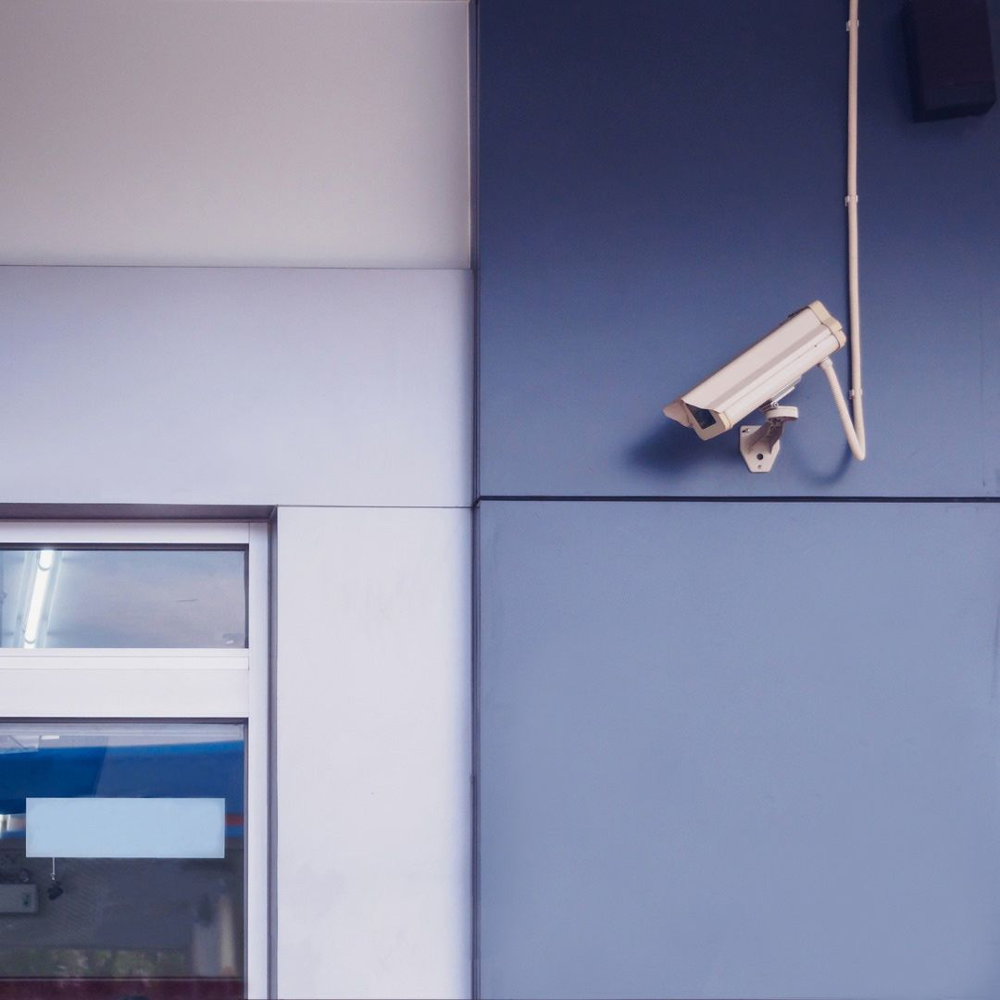
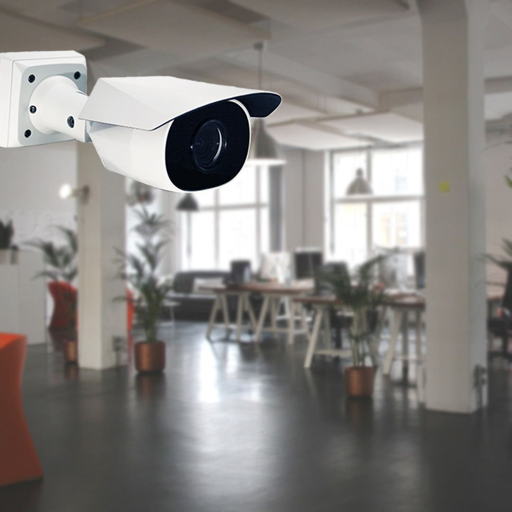

On this page
AT A GLANCE
At SPL Security Solutions, we offer advanced security camera systems tailored to protect properties in Robina.
Get A Free Quote Now!
Thank you for contacting SPL Security Solutions.
We will be in touch soon.

Security Camera Systems Robina
At SPL Security Solutions, we offer advanced security camera systems tailored to protect properties in Robina. Designed for both indoor and outdoor use, our security cameras provide reliable surveillance and peace of mind. Indoor options can be installed in key areas like entryways, living spaces or offices, ensuring valuable items and high-traffic zones are monitored effectively. For outdoor areas, our durable, weather-resistant cameras deliver high-quality footage to deter intruders and document incidents.
We offer flexible wired and wireless systems that cater to homes, businesses, and public spaces. With high-definition recording, remote access via smartphone or desktop, and seamless integration with other security solutions, our systems are designed to meet your specific needs.
Call us today on (07) 5588 8111 to discuss your security camera requirements and find the right solution for your property in Robina.
Residents in Robina can rely on professional locksmith and hardware services to enhance home security. From installing durable locks and door hardware to emergency assistance, we offer everything needed to secure your property.
Robina businesses can benefit from tailored security solutions to safeguard assets and streamline operations. Whether you need high-security locks, access control systems or custom hardware, we deliver dependable solutions for your needs.
In Robina, our automotive locksmith services provide quick and reliable solutions for key replacements, lock repairs, and ignition issues. Whether you’re locked out or need a transponder key programmed, we’ll help get you back on the road efficiently.
Restricted key systems in Robina are ideal for managing access to sensitive areas. They prevent unauthorised duplication and give you greater control over who enters your home or workplace.
Protect your valuables in Robina with robust safes designed to resist theft, fire, and water damage. We provide comprehensive support, including installation and maintenance, to ensure your safe remains secure.
We design advanced security systems for properties in Robina, integrating CCTV cameras, alarms, and access control. These tailored systems provide complete coverage and enhanced protection for your home or business.
Upgrade your property’s security in Robina with dependable lock hardware. From basic locks to advanced systems, our solutions cater to residential and commercial security needs.
Our door hardware combines durability and functionality, offering options like handles, hinges, and closers. These products are designed to provide secure and stylish access to your home or workplace in Robina.
From robust fire-rated hardware to effortless door closers and refined handles, our range seamlessly merges practicality with style for all design aesthetics in Robina.
Benefits of Security Cameras in Robina
Security cameras provide essential protection and monitoring for properties in Robina, offering a range of advantages:
- Crime Deterrence
Visible cameras discourage theft and vandalism, making your property a less attractive target for criminals. - Evidence Collection
Security footage serves as critical evidence for investigations or disputes, ensuring clarity and accuracy when incidents occur. - Remote Access
Easily monitor your property in real-time or review recorded footage from anywhere using your smartphone, tablet or computer. - Safety Assurance
Identify potential risks and hazards early, improving safety at home and in the workplace. - Cost Efficiency
Reduce theft, lower insurance premiums and eliminate the need for on-site security staff with a cost-effective camera system.

Contact Details
24/7 Emergency Locksmiths or Security Tech


Trading Hours
Retail Shop
Oops, there was an error sending your message.
Please try again later.

Frequently Asked Questions
-
Are wireless security cameras reliable for Robina’s climate?
Yes, wireless security cameras are designed to perform well in various conditions, including Robina’s climate. Outdoor models are weather-resistant and built to handle rain, heat and humidity without compromising performance.
-
How do I choose the right camera system for my property?
Consider factors like the size of your property, the areas you want to monitor and your budget. For comprehensive coverage, a mix of indoor and outdoor cameras with remote access and high-definition recording is recommended.
Locksmith & Security Solutions Gold Coast, Brisbane & Northern NSW